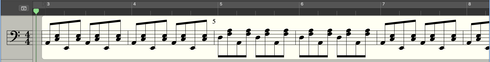
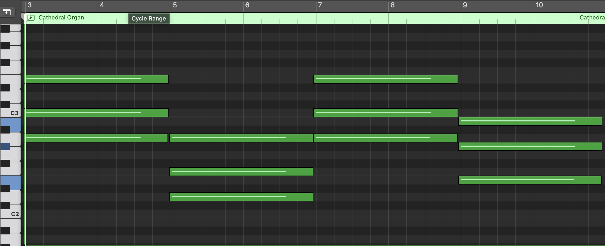
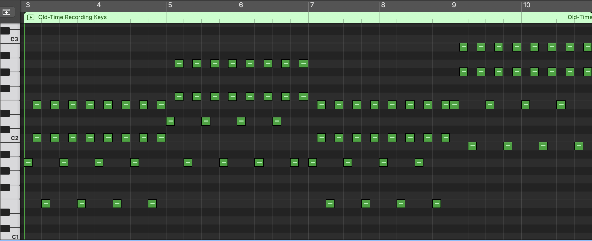
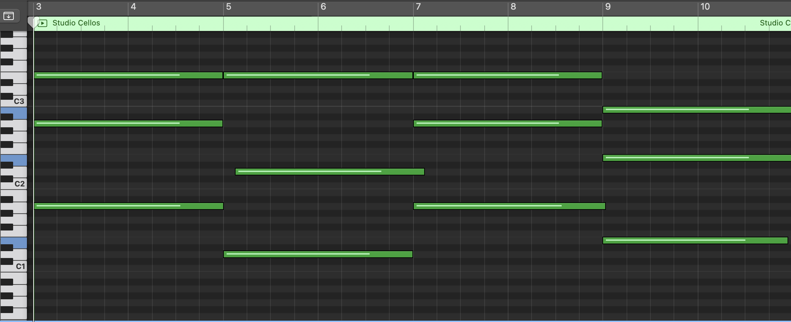
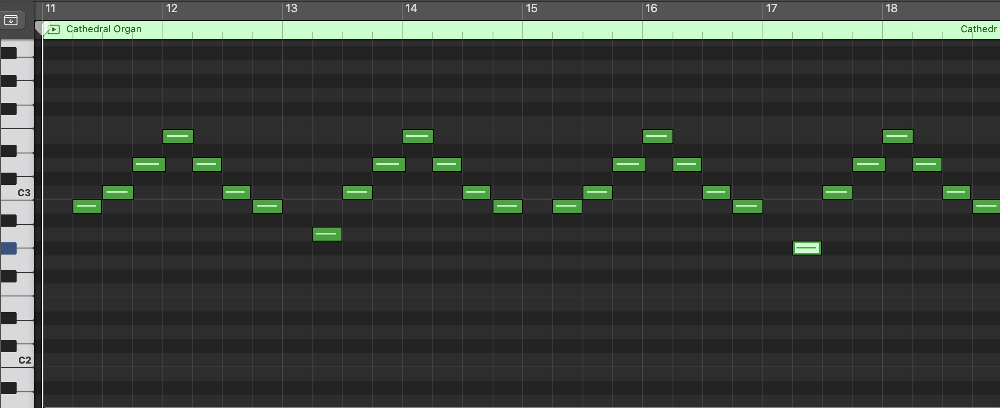

The first thing I do when I’m working on an audio reimagining is watch the source material a few times. While doing this, I take notes of things I liked about it, and things I’d like to add or change. In the clip I chose for this project, what I liked most were the old-school sounding, overly cartoonish effects and the music’s fast tempo. To make it my own, I wanted to put ragtime music over it to fit more with the music throughout most of the game, and I wanted to make the music a bit louder so that it gets a bit more focus than it did in the original clip. I also wanted to edit the sound effects a bit, because the villain, chef saltbaker, appears to be a glass salt shaker, but there aren’t many glass sounds audible in the original clip, and I want to accentuate that detail a bit more.
With my game plan in place, I threw the clip into logic, muted it, and watched it back. I typically start out by picking a character on screen and finding sounds for their movements in order of appearance. Then, once I have a decent number of sounds in the clip and it starts to feel a bit more fleshed out, I start to add in background sounds and ambience.
By this point, I have a feel of the energy of the clip, and I can finally start working on my favourite part– the music. The first thing I always do when starting to score over video is gather inspiration. If I already have an idea of what I generally want it to sound like, I’ll listen to a few songs, or even make a playlist of songs, with a similar vibe to what I’m going for. If not, I listen to the original music on the scene or clip to get an idea of what the original composer felt matched with the scene.

This is where the hardest part was for me on this project. I typically compose grand, orchestral pieces, or pop and rock music. I had never touched ragtime before, but I was determined to have an original ragtime-esque piece in this project. A few hours of YouTube tutorials and pages and pages of release notes (so graciously put online by the original composer of the Cuphead soundtrack, Kristofer Maddigan) later, I concluded my research and began composing.
After a few ideations, I finally found a chord progression I liked. After that, composing the rest of the score was a walk in the park! I picked my main instrument– an organ because it sounds spooky– and layered it with old-sounding piano and cellos to give it more of an orchestral feel. I then topped it off with an arpeggiated organ that comes in later on. My process isn’t very organised. I normally just keep adding and removing tracks with different bits of melody until it feels right. Once it’s done, I add it to the overall video, and I continue on editing.




This was the home stretch. I added in whatever other sounds I needed to search sound libraries for, and then I composed whatever sounds still needed to be added right in logic. Now is the time where I mix levels and add any necessary effects to really make sure it all sounds cohesive. I got some feedback, made a few adjustments, and finally, my masterpiece was complete!